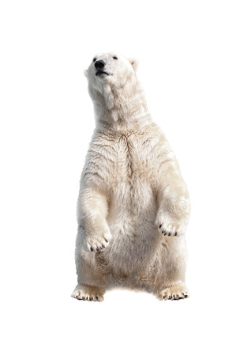

|
|
|  | ¿Por qué los osos polares se encuentran en peligro de extinción?La pérdida de su hábitat, el hielo marino, debido al cambio climático, es la mayor amenaza para la supervivencia de los osos polares. Sin embargo también enfrentan otras amenazas como los conflictos con los humanos, la caza insostenible y los impactos generados por la industria. CONFLICTO ENTRE HUMANOS Y OSOS POLARESA medida que el cambio climático está obligando a los osos polares a pasar más tiempo en tierra, éstos entran en contacto más a menudo con las comunidades de la región. Desafortunadamente estas interacciones a veces terminan mal para los humanos y los osos. IMPACTOS INDUSTRIALESEn el Ártico, la mayor parte del desarrollo industrial sucede en áreas relativamente pequeñas. Cuando el hielo marino se aleja durante el verano surgen más oportunidades para el desarrollo industrial en el mar y en porciones terrestres más grandes. Al mismo tiempo, el hielo que se aleja está ocasionando que más osos polares pasen períodos más largos en tierra. |
Mas motivos sobre su extinción |
|